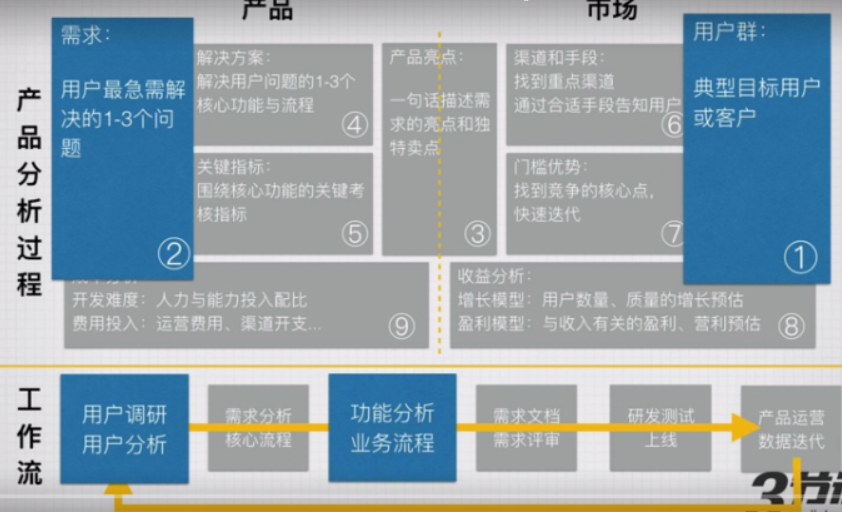

用户分析进阶
一、深度用户调研
1.用户调研模块

2.为什么要做用户调研
- 了解用户对产品的使用过程
- 了解目标用户群的使用场景和过程
- 总结用户的问题和流程
- 提出最合理的解决方案
3.用户调研的常见误区
- 指望从用户调研中获得需求是产品经理懒惰的表现
- 用户调研!+用户访谈，访谈只是其中一种方式
- 把个体当整体
- 从用户调研中找自我感觉的证明
- 用户调研结论不要谈占比（抛开基数谈占比就是耍流氓）
4.用户调研中最最最最忌讳什么
- 直接问用户想要什么、有什么需求
- 直接问用户有没有用、好不好用
- 快速打断用户
- 说服用户
5.观察使用过程>提问>用户主动说
6.用户调研是植根于产品经理日常工作生活的必备素质
7.用户调研过程

8.明确调研的背景和目的
- 背景：什么情况下发起的调研？是否必须通过用户调研来解决？
- 目的：希望通过用户调研，希望得到的结果是什么？
- 忌大而全：调研的方向越聚焦，越有价值
- 忌假大空：针对行业用户的调研，针对满意度的调研，价值都不大
- 和做产品调研是一样一样的，先明确目的，再动手调研

9.确定用户调研的对象
- 基于背景和目的，先挑出大量符合行为的用户
- 选定部分目标用户，针对性分析（用户画像）
- 选定合适的用户（时间、地点、感兴趣程度等）
- 邀约用户：直接说明目的，并告知可能发生的情况
- 数量：一般不超过5个
10.猜测目标用户可能面临的问题
- 分析调研对象可能踫到的问题和解决方案
- 猜测用户的需求并提出解决方案
- 把解决方案变成可执行的demo（纸面、原型等）
11.准备任务和访谈提纲，并演习
- 按照用户调研预设时间的2倍去准备问题
- 标注必须要回答和用户操作的关键问题
- 准备用户必须操作的任务
- 把问题串起来，并找你的同事预演一遍
- 总结和调整

12.调研现场
- 先缓和情绪，不要着急一下子进入到访谈/调研中
- 了解背景信息与自己猜测是否匹配（用户画像课程）
- 尽可能模拟用户真实的环境
- 尽可能记录用户的操作过程：录屏、录音、笔记
13.调研结束总结
- 整理单个用户的调研过程
- 是否要调整调研的对象
- 汇总本轮调研用户的过程和结论
14.用户调研，不仅仅是找几个用户聊聊那么简单，需要精心准备
二、用户画像：了解关键用户
1.用户分析模块

2.用户特征分析
- 通过各种方法，更完整了解目标群体的情况
- 描述典型的目标用户及其群体行为
- 用户分析=信息的分析
3.目的
- 明确知道你的用户真实的诉求点
- 为功能设计提供核心依据
- 数据挖掘与用户推荐的底层支持
4.用户特征分析逻辑

5.用户特征分析过程

6.把用户特征分层分类是做好用户画像的关键
7.用户特征分析过程

三、用户调研现场
1.调研工具

2.怎么做
- 1）望：看用户是如何操作的，让用户完成明确的任务
- 给用户一到两个明确的任务（基于之前你对用户的分析）
- 让用户自行使用并完成任务（不做任何主动指导和讲解）
- 从用户完成任务的过程中，从场景中发现问题
- 不同类型的用户，尽量分开做，不同的任务，分开做
- 2）闻：猜测用户在哪里出现了问题，分析用户卡住的原因
- 重点关注异常行为
- 重点关注用户的表现
- 重点关注用户的表情
- 3）问：让用户说说当时的想法，用户试图解决什么问题？为什么？
- 用户拿到任务之后，是怎么思考的
- 认为需要完成工作，大约需要怎么做？
- 针对关键节点，完整描述现象，并提问
- 追问为什么
- 完成一个行为和问题收集：在一个完整路径上追问；用聚焦且开放的问题，引导用户说出自己的想法；打破砂锅问到底；

- 4）切：发现机会，验证机会，观察反馈，用户觉得有什么方法能更好解决问题
- 基于用户完成任务的过程中踫到的问题
- 用户认为可以怎么做，会更好提升体验
- 继续追问为什么
- 5）演示新的解决方案，看看用户的感受
- 把之前考虑过的方案拿出来展示给用户，并简单讲解
- 关注点：和现在相比，对于用户的吸引力是什么
- 继续追问为什么
3.提问技巧：问聚焦且开放的问题，针对现象问，而不是泛泛来
4.让用户开口
- 1）故事，让用户讲故事，讲他的经历，把用户当采访对象
- 2）鼓励，少打断，多鼓励用户表达，期待的眼神
- 3）刺激，说反话，聊对立的用户，让用户表达看法
需求挖掘进阶
一、用户故事
1.如何描述用户的问题

2.描述用户发生了什么事情

3.提炼：总结用户的问题，用一句话说明它
4.延伸：找到问题背后的原因，并提炼出有用的结论
5.为什么会发生这个问题？

6.你的产品出现了，会怎样？
7.不同场合讲不同的故事
- 讲需求的时候：用户有什么问题，有多痛，然后开始讲需求
- 推广产品的时候：自从有了它，难言之隐一洗了之，然后讲用户之前踫到的问题....
- 给运营讲功能的时候：先讲对比，再讲功能，最后讲用户面临的问题
二、HMW分析法
1.How Might We=我们可以如何=有什么办法
- 找方向：HMW=解决这个问题的方向，打开思考的困局
- 扩展思路：把一个小问题大幅扩展，把问题想透
- 头脑风暴：暂时不需要考虑具体的方案，让头脑风暴更高效
- 创新点：让每个吐槽都可能变成创新点
2.什么时候用？
- 头脑风暴前：解决头脑风暴效率的问题
- 分析用户反馈：在踫到用户反馈，马上用HMW分析
- 和领导PK：用HMW对付领导是一个好办法
3.Designhackathon中HMW的使用

4.最适用场景
- 面对明确的用户和问题：一类明确的用户，在踫到一个相对明确的问题最适用
- 锻炼自我思维：把任何事情都用产品的思维来分解
5.HMW的逻辑

6.HMW流程
- 1）明确用户和问题

- 2）拆解问题的方向
- 否定：如何想办法让用户放弃这个想法？
- 积极：如何让用户提升自己来解决问题
- 转移：如何让其他人解决问题，继而解决这个用户的问题
- 脑洞大开：不敢想的一些方案
- 分解：把很大问题拆解成2-3步

- 3）针对HMW做方案
- 穷举：通过头脑风暴，穷举所有可能的解决方案
- 打开思路：不要自我限制，先列出来，后面有限制办法

- 4）一些建议：不好的、不明确的HMW
- 不能太空太宽泛
- 不能太窄过于具体
- 不能完全自身能控制的范围区域
产品调研进阶
一、竞品分析：抄也是一门学问
1.所属模块

2.为什么要做产品调研
- 产品分析：了解产品的概况，具体功能模块的产品设计逻辑
- 竞品调研：竞品监测，分析竞品的情况
- 日常交流学习，提升产品感觉
3.产品调研的常见误区
- 产品调研报告!=行业分析报告
- 产品调研报告!=产品体验报告
- 产品调研报告!=写产品报告
- 不要用【看起来很高深】的分析过程来证明自己的结论是靠谱的
- 不要期望通过竞品的调研来证明自己的【存在感】
4.产品调研的全过程

5.明确调研的背景和目的
- 1）背景：为什么要调研？
- 产品设计过程中需要了解同类产品
- 通过调研来提升自己的能力
- 2）目的：希望通过调研，得到的结果是什么？
- 通过调研的结论，来制定自己产品的策略
- 通过调研，深入了解一个产品的动作模式
- 3）忌大而全：越聚焦的调研，价值越大
- 4）忌假大空：针对行业的调研，是收费的调研公司进行的

6.选定目标产品
- 1）功能点调研：关注主流产品的相关模块
- 支付流程：京东、微店
- 社交网站注册流程：陌陌、微信、nice
- 2）完整产品调研：关注1个龙头产品、1-2个新晋热门产品
- 了解外卖服务流程：美团、饿了么、百度
- 记账类产品的核心流程：挖财、网易有钱
7.深度体验产品
- 重点关注用户、使用场景、需求
- 把用户、场景、需求明确下来，尽可能找到相应的用户做简单的访谈
- 找出用户视角的产品实现逻辑

8.还原产品
- 重点关注解决用户需求的过程
- 还原产品，最重要关注的是流程，而非界面

9.分析产品
- 从产品的视角来分析，而不是自我感觉
- 重点关注产品表现，而非界面
- 不要做看似专业且复杂的分析，通常用户流程中的使用过程，数据已经表现出来了

10.产品迭代、运营分析
- 现在很重要，但发展的过程更重要
- 从产品迭代中可以发现人家踩过的坑
- 从运营过程中可以发现产品的表现和重要程度

11.横向比较同类产品
- 与同类产品相比，分别处于什么位置？
- 找到产品之间的核心差异点
- 总结分析同类产品的优缺点

12.撰写调研分析报告
- 清晰明确的结论
- 逻辑清晰地表达调研的过程和结论之间的关联
- 抓重点，说正事
- 调研报告不要带个人色彩，以中立的角度来描述
- 可读性强，照顾读者
13.推广报告
- 内部分享：在公司内部建立起分享会
- 外部发布：在第三方平台表达出来
14.如果你不能从流程上去理解一个产品的设计，你就只能提界面的改进这种不痛不痒的内容
二、产品初期针对行业的调研
1.Product-Market Fit（PMF）
- product/market underfitting：产品脱离了市场
- product/market overfitting：产品被市场套牢，并且随着市场的萎缩而消失
2.机会

3.产品地图包括：
- 市场趋势和规模
- 产业链梳理：业务抽象化表达
- 主要的玩家和商业模式
4.典型产品的结构化分析
- 1）黑盒：画布分析

- 2）白盒：产品解剖的五个维度

5.云音乐案例
- 1）产品结构

- 2）核心业务结构

- 3）运营动作

- 4）数据：用户增长数据

- 5）数据：版本迭代数据

- 6）数据：App Store排名数据

- 7）用户评价：典型分析
- 8）用户评价：抽象分析

6.用户画像
- 1）价值与风险
- 可以客观的描述用户的统计学特征、行为特征和心理特征，能够使产品和运营更加透明，需求描述更加清楚
- 风险：只是参考，无法定性确定核心需求，不能过度依赖
7.机会与威胁
- 1）SWOT
- 2）波士顿矩阵BCG Matrix
8.结论的串行化表达：用户故事地图
9.数据来源

10.规划的核心是消灭未知的恐惧
11.产品分析的核心是避免别人的坑
12.产品定位：谁是敌人+我的机会
13.最后的产出

14.从整体到细节的把控：产业链、竞品玩家、典型产品

功能和流程进阶
一、复杂流程图设计
1.先分析功能的关键逻辑
角色：都有什么人参与到功能里
事项：分别扮演什么角色（要做什么事情）
信息的流向：要完成任务，顺序（流程）是如何的？
2.明确用户与任务
参与者：明确所有参与用户与系统，系统也作为一个参与角色
关系：简要梳理一下参与者的关系
目标：所有参与者，最终的目标是什么？
3.明确开始与结束的路径
每个功能模块中，从哪里开始流程，到哪里终结流程
一般开始和结束只有一个，如果结束很多，就意味着用户会转晕
是否有必要区分时间阶段？
4.确定功能模块与核心路径
都有哪些功能模块会参与到流程中
主线流程也就是核心流向一定要清晰
核心流向意味着功能目标，核心流向不清晰，用户一定不满意
5.不断调整优化顺序，合并异常流程
异常流程考虑清楚，尽可能细化
异常流程=用户体验
异常流程多与研发沟通有奇效
6.全并或拆分流程有依据
先复杂后简单，先加法后减法
调研相关产品，合并、分拆有理有据
以数据指标为核心来指导流程优化
二、需求池与版本优先级管理
1.了解需求池之前，必须清晰知道
- 所负责的产品，版本演变的过程是什么
- 改进和BUG的区别是什么

2.需求池是什么?
- 人是很健忘的，灵光一闪的idea、看到的问题，都是需求池的内容
- 需求池!=需求管理，即是需求管理过程中很重要的一部分
- 需求池与产品版本之间的关系是什么？

3.常见的需求池工具
- Excel
- Teambition/Tower
- trello/JIRA
- 思维导图
4.需求管理不存在绝对的方法，自己和团队顺手就可以了
5.需求进入需求池的过程
6.需求收集
- 描述需求得到时的状况
- 谁在什么时候反馈了哪些用户踫到的问题

7.需求整理
- 第1步：是Bug、改进还是全新需求？
- 第2步：有效需求还是无效需求？
- 第3步：需求要不要做？能不能做？


8.需求反馈
- 尽量当下反馈结果
- 尽量真实反馈结果，多一点真诚，少一点套路
- 如果进入需求池，尽量做到有行动计划

9.需求进入需求池过程

10.一闪而过的想法、用户的吐槽、产品被投诉都非常有价值，值得被记录并且进行认真的分析
三、商业产品
1.商业模式很重要吗？
- 很重要：代表产品的生存，企业的未来
- 不重要：有用户才有商业模式，有产品价值才有商业价值
2.商业模式不是规划出来的，是演变出来的
3.什么是商业产品？
- 以变现为目的的产品：商业产品就是为收入服务的
- 平衡商业与用户：商业产品与用户产品之间，取得平衡
- 可持续发展：短期收益与长期收益之间的平衡
4.商业变现
- 1）明确产品优势
- 产品价值：你的产品，能给用户提供什么样的价值点？
- 用户特点：活跃度高低？留存率高低？拉新效率高低？
- 付费意愿：哪些用户愿意为哪些服务（价值）付费？
- 2）明确产品阶段
- 节奏：有节奏的上产品，而不是一次性全上
- 关注数据：不同产品阶段，重点关注的数据项有区别

- 3）变现路径选择
- To B：大流量，提供独特的产品价值或服务
- To C：大用户量，提供独特的价值或服务
- B To C：大用户量+大流量

四、制定功能的考核指标
1.指标：考核指标就是数据分析统计吗？需求考核指标是考核产品上线后的数据表现
- 需求考核指标!=KPI，只是单次需求的效果检验
- 需求考核指标!=目标，而是上线效果的自然表现
- 需求考核指标!=成绩，如果每次都好，是能力，如果不好，迭代
2.需求考核指标有什么用？
- 建立一套相对客观公平的效果评估依据
- 为产品后续的迭代做依据
- 对产品可能出现 的风险做监控
- 内部沟通的润滑剂
3.关注：需求考核指标具体有哪些？
- 1）能反映效果的指标
- 各种转化率：订单转化率、注册转化率….
- 活跃度：访问深度、发布比例、回帖比例……
- 留存：次日留存、周留存、4周留存…….
- 2）能反应产品问题的指标
- 访问速度
- 潜在Bugs的发生比例
4.需求考核指标如何合理设置？
- 1）可量化、可计算、可执行：
- 满意度不能作为考核指标
- PV、UV不能作为单次产品需求的效果
- 2）与你本次需求有直接关系的指标
- 3）对比：和上次相比如何？
5.制定考核的关键：拆解指标
- 1层：现阶段要完成的用户价值或商业价值是什么，逻辑是如何的？
- 2层：从产品和运营层面，有哪些关键因素会影响这个指标
- 3层：从产品功能角度，必须要关注产品指标？
- OS：关联指标有什么？避免按下了葫芦冒起了瓢
6.当前版本产品需求的目的是什么？
- 1）本次需求的目的是什么？
- 提升速度？
- 提升活跃？访问深度、发帖转化率
- 提升分享的比例？
- 2）哪些指标能体现这次需求的目的？怎么计算的？
7.回到流程图，指标一定在流程图里面
- 找到关键节点，监控数据就是核心指标
- 核心指标是怎么计算的？公式是什么？
- 必须统计的底层数据项有哪些？
- 再找2-3个需要关注的辅助指标是什么？
8.确定数据埋点
- 底层数据项有哪些？分别在哪几个页面或者流程中？
- 哪些页面需要打点（埋点）
- 基于业务流程图的打点是最有效的打点方式
9.制定数据回收策略
- 1）短期关注，提前约定好，找研发跑一遍出来分析即可
- 上线后1周、2周、1个月的数据表现
- 上线后用户使用情况，有个概念
- 2）长期关注，需要功能支持，进统计后台或者定期自动邮件发送
- 上线后每天都要检测的数据，比如注册用户数、关键转化率、基础数据
10.分析数据，找到迭代的方向
- 上线后数据出来，一定要分析，要结论！要结论！要结论！
- 数据不理想，是否有bug，还是用户没抓准？还是流程上出了问题？
- 相比较而言，数据表现是如何的？
- 给相关人员通报上线后的数据表现和结论，进行需求总结
11.产品需求包含数据要求，可量化可执行，对“产品人品”的累积有巨大的帮助
原型设计进阶
一、复杂流程的原型设计
1.复杂原型设计是什么？
- 完整的新产品、完整的新功能
- 设计的流程链条比较长
- 交互页面、交互逻辑比较复杂
2.复杂原型的设计处理步骤
- 1）需求分析：明确用户场景问题
- 2）产品功能：核心流程、信息架构图、版本过程
- 3）流程图：业务流程图、页面流程图
- 4）原型设计：手绘原型、软件设计

3.明确用户场景与需求
- 目标用户：产品的目标用户是谁？
- 使用场景：关键使用场景是什么？
- 解决问题：产品可以帮助用户解决什么问题？
- 产品亮点：有哪些点会吸引用户使用？
4.产品核心功能
- 核心流程：用户流向、内容流向、信息交叉分别是如何的？
- 信息架构图：包含哪些模块？每个模块底下有哪些功能点？
- 版本演变过程：要达到相对完整的状态，需要几个版本？每个版本都包含哪些功能模块？
5.流程图分解
- 业务流程图：每个功能模块的业务流程是什么样的？
- 页面流程图：整体来看，用户的使用流向是如何的？
6.原型设计
- 手绘原型：快速确定页面逻辑，快速调整关键元素
- 原型设计：按照页面流程图与手绘图，进行demo设计
项目管理进阶
一、怎么做项目总结
1.产品经理管项目，最重要关注什么？
- 进度：控进度、跟进度、保进度
- 资源：给兄弟姐妹们争取资源，协调资源
- 风险：延期、变更风险预警
- 效率：想办法让项目快起来
2.快起来第1步：明确目标，统一思想
- 明确目标：要完成什么产品功能，上线后对各方的收益
- 明确时间：开始、预期结束的时间
- 明确回报：设定奖励规则
3.快起来第2步：拆分项目并公开
- 拆分阶段上看板：ToDo、Doing、QA、上线
- 拆分功能上看板：本项目会有哪些功能点？写卡片
- 功能点责任到人：正在做的功能点，都谁负责，登记卡片
4.快起来第3步：进度透明
- 站立会：每日站立会，通报进度
- 看进度：谁提前，表扬谁，谁delay，帮助谁
5.快起来第4步：总结项目
- 结束总结：每个项目结束，务必总结，提升合作的顺畅程度
- 营造氛围：保持团队氛围很重要
- 解决问题：问题出在哪个环节？哪个人身上？
6.团队配合是通过一个一个项目迭代后磨练出来的，而不是通过最好的“管理工具”实现的
7.提升自己的专业度
- 少改需求！少改需求！少改需求！
- 明确版本/功能的重点是什么，需求优先级是啥
- 清晰的流程、原型、文档
- 全员认真的需求评审
- 测试用例、测试过程全程参与
8.提升自己的职业素养
- 出席站立会、不迟到、陪团队一起加班等
- 态度端正，以身作则，少抱怨，多鼓励
- 及时同步变化，公开透明
- 把一切落实在纸面上，会议有记录，讨论有记录，有邮件同步
- 给团队争取提前量
9.产品狗被打是常态，但不被打的产品狗一定是条好狗
二、产品经理如何与测试配合
1.产品测试过程是如何的？

2.主动：为什么一定要参与测试？
- 对产品开发的状况做基本的了解
- 对产品的bug做判断
- Bug修复的优先级调整
3.产品经理怎么参与测试
- 基于你的需求文档，自己挖的坑自己填
- 回归流程，从流程入手，确保流程没问题
- 从流程中分解测试用例（大用例，小用例QA出）
- 复现->保留现场->记录->找QA->找研发
- 提bug（一定要区分bug和改进）
- 对bug分优先级：必须改（一级）、可以改（二级）、下回改（三级）
4.团队配合是通过一个一个项目迭代后磨炼出来的，而不是通过最好的“管理工具”实现的
5.上线之前做什么
- 人：各路小伙伴，通知到位
- 物：各种物料、文档都准备好
- 事项：后续需要谁支持，都提前沟通到位
上线前后的产品运营进阶
一、产品上线的推广策略
1.评估产品上线目的
- 1）探索
- 运营侧重点：容错性较高的种子用户；重点测试需求和产品价值；关注用户使用情况
- 潜在数据指标：种子用户使用时间；频次；留存率；活跃度；用户美誉度；自然用户新增等
- 2）推广新业务线（新功能）
- 运营侧重点：新功能资源储备；新老业务间的兼容性；新功能推广情况；用户使用情况；客服&用户维系
- 潜在数据指标：新功能推广方式；用户反馈；推广转化情况；用户停留时间；用户使用活跃度等
- 3）拉升某个特定数据
- 运营侧重点：目标拆分&细化；数据分析&策略调整
- 潜在数据指标：分解目标重点数据；运营手段落地；执行有效性
2.产品运营方案要考虑的3点
- 1）产品价值的完善&维系
- 产品的核心价值中，是否有必须依赖于运营端来给用户提供的？
- 产品的核心价值中，是否有一部分需要不断依赖于运营进行维系？
- 为了构建完善的产品价值，是否还需要引入更多资源？
- 2）用户告知&产品推广：
- 产品上线后，如何告知已有用户使之来使用？
- 产品上线后，如何面向新用户发声和进行推广，更好拉动用户增长？
- 通过何种形式告知用户效果更好，可以更好带来转化率？
- 已有推广资源是否足够，是否需要开拓更多资源？
- 2.1）推广&站内告知
- 站内：EDM、PUSH、各种推荐位、用户引导位
- 站外：社会化媒体、外部渠道、活动等
- 3）如何建立和维系好产品生态
- 从用户新增-留存-活跃-传播这条路径上来看，有哪些环节是本版上线后需要运营去重点关注和辅以运营手段落实执行的